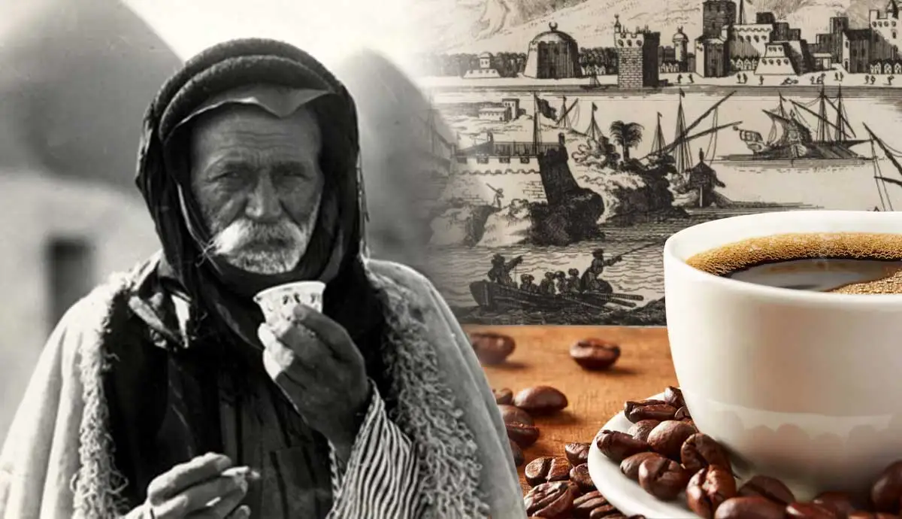

Never in all their history have people been able truly to conceive of the coffee journey as one: a single bean, a seed, having the qualities of flavor and aroma, a round bean in which all the nuances eventually meet, in which there is no flavor because every note, or none, is dominant — an equal bean which all coffee lovers savor as equals. The coffee connoisseur's bean, if brewed with care, will be truly rich: a flavor in practice, not in theory.
Coffee culture cuts two ways, of course; its products can be enjoyed for both warmth and energy. But there's no turning back from coffee. The early rituals about brewing also come from coffee enthusiasts.
What was most significant about the coffee ritual was not that the bean was brewed but that it tantalized the senses.
From Ethiopian Discovery to Global Sensation
Legend has it that coffee's journey began in the 9th century in the Ethiopian region of Kaffa. According to popular folklore, a young goatherd named Kaldi discovered the magical properties of coffee beans after noticing the energizing effect they had on his goats. Intrigued by the beans' stimulating qualities, Kaldi shared his findings with local monks, who used them to create a drink that helped them stay awake during long hours of prayer.
Coffee plants thrive in a region known as the "Coffee Belt," a zone between the Tropics of Cancer and Capricorn. This belt, stretching around the equator, provides the ideal conditions—adequate rainfall, rich soil, and a consistent climate—for coffee cultivation. From the misty mountains of Ethiopia to the lush landscapes of Colombia, coffee's journey involves traversing this diverse and picturesque belt.
Coffee starts as a cherry-like fruit on a tree. Inside each fruit are two seeds, which we know as coffee beans. The unique process of transforming these seeds into the aromatic coffee we love involves harvesting, processing, roasting, and brewing. It's a journey that highlights the craftsmanship and dedication of those who bring us our daily dose of coffee bliss.
Coffee has a unique ability to bring people together. From casual conversations in local cafés to global coffee culture events, this beloved beverage fosters connections worldwide. Whether you're enjoying a traditional Ethiopian coffee ceremony or sharing a cup with friends in a trendy urban coffeehouse, the global sip of coffee creates a sense of unity among coffee enthusiasts everywhere.